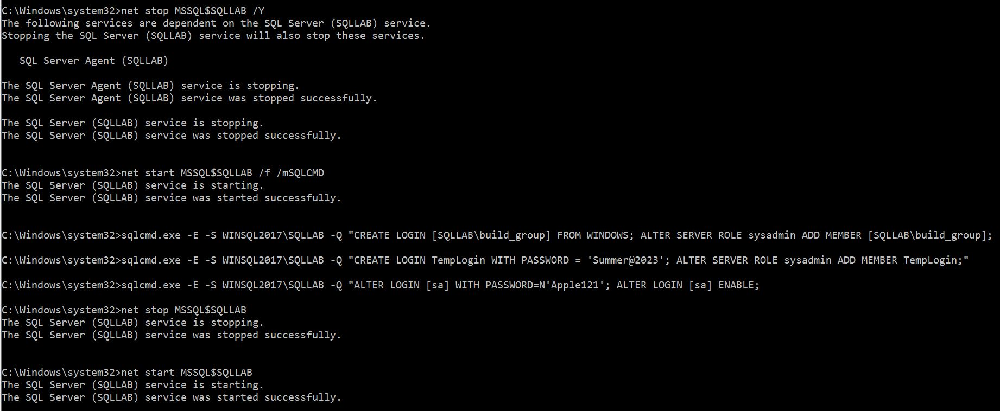
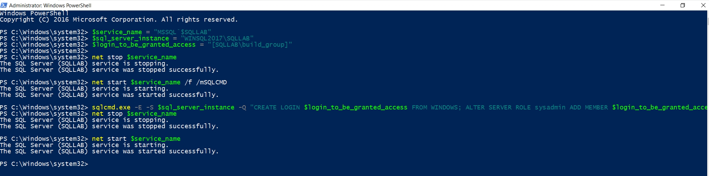
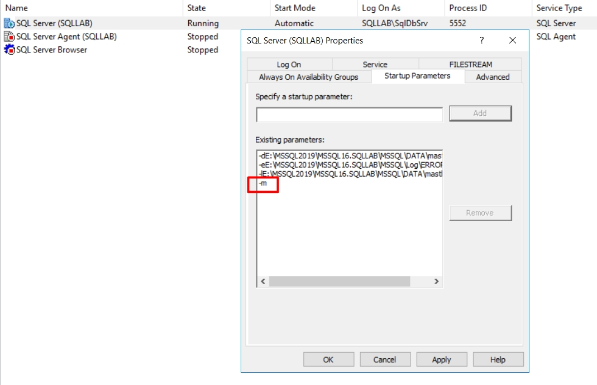
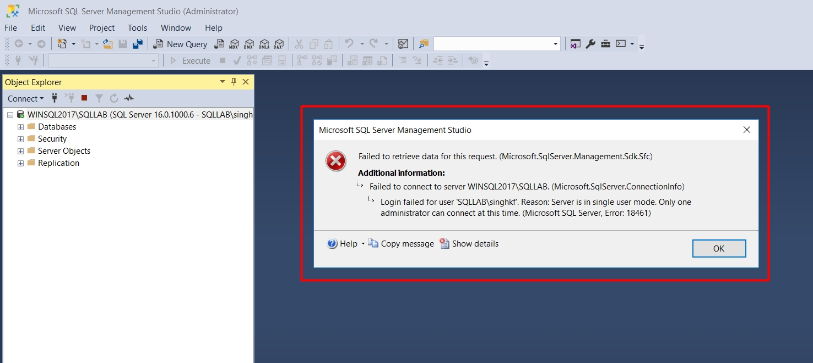

Add Windows\SQL login to instanace in single user mode
Add Windows or SQL login to SQL Instanace with SYSADMIN Reset "sa" password or enable "sa" account We may have a situation when we cannot connect to SQL instance due to missing Windows users/group under SQL logins OR we cannot connect using "sa" as we don't know the password or "sa" was disabled In this situation, if we are connected to Windows server using account with administrator permissions, we can start SQL instance in single user mode and add the required logins Prerequisite: You must login to Windows machine with the account which is member of local administrator group Open command line with Administrator mode Stop the service net stop MSSQL$SQLLAB Start the service in single user mode using /mSQLCMD option net start MSSQL$SQLLAB /f /mSQLCMD Connect SQLCMD and create login with sysadmin permission sqlcmd.exe -E -S WINSQL2017\SQLLAB -Q "CREATE LOGIN [SQLLAB\build_group] FROM WINDOWS; ALTER SERVER ROLE sysadmin ADD MEMBER [SQLLAB\build_group]; " If SQL server has mixed mode, you can also create a SQL Login with sysadmin permission sqlcmd.exe -E -S WINSQL2017\SQLLAB -Q "CREATE LOGIN TempLogin WITH PASSWORD = 'Summer@2023'; ALTER SERVER ROLE sysadmin ADD MEMBER TempLogin;" If SQL server is in mixed mode, you can also also reset the "sa" password or enable it if it was disabled sqlcmd.exe -E -S WINSQL2017\SQLLAB -Q "ALTER LOGIN [sa] WITH PASSWORD=N'Winter@2023'; ALTER LOGIN [sa] ENABLE;" Then stop and start SQL service in normal multi user mode net stop MSSQL$SQLLAB net start MSSQL$SQLLAB Check implementation in the screenshot below  You can add logins using Windows Power shell as below: $service_name = "MSSQL`$SQLLAB" (Make sure to write ` before $ in the value) $sql_server_instance = "WINSQL2017\SQLLAB" $login_to_be_granted_access = "[SQLLAB\build_group]" net stop $service_name net start $service_name /f /mSQLCMD sqlcmd.exe -E -S $sql_server_instance -Q "CREATE LOGIN $login_to_be_granted_access FROM WINDOWS; ALTER SERVER ROLE sysadmin ADD MEMBER $login_to_be_granted_access; " net stop $service_name net start $service_name  You can add logins using SSMS with single user connection: Open "SQL Server Configuration Manager" >> Right Click Database Service >> Properties >> Startup Parameters Add "-m", Apply, ok  It will ask for service restart, go ahead with that At this point in time, SQL instance is running in single user mode. Now open SSMS >> Run as Administrator, this will pass your Administrator credentials to SSMS. You may see some connection error as below, just click "ok"  At this point, you are only connected to object explorer using single administrator connection. No other connection allowed at this stage as SQL service is currently running in single user mode You can now expand security and logins in object explorer and add the required user/group Alternatively, you can disconnect from object explorer and open a new query window and use TSQL to add new logins. Tip: To connect to query window: Open SSMS >> Run as Administrator On connection window, click Cancel (If you click "connect" it will connect to object explorer) Now Click "New Query" button, connection window will appear again Now click Connect, it will let you connect to query window Note: Since in single user mode, only one connection is allowed, therefore you can either connect to object explorer or query window Once you are done adding logins, go back to SQL configuration manager Right Click Database Service >> Properties >> Startup Parameters Remove "-m" and restart the database service to make it run in multi user mode